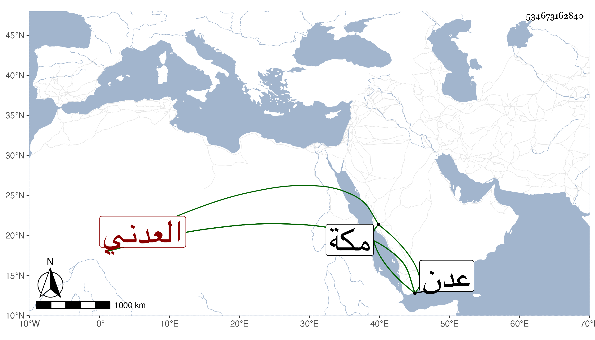

0902Sakhawi.DawLamic.ITO20230111-ara1.EIS1600.534673162840
Biography ID: 534673162840
587
محمد بن علي بن يحيى جمال الدين بن نور الدين بن جميع العدني الماضي أخوه الوجيه عبد الرحمن وأبوهما . ولد سنة إحدى وتسعين وسبعمائة أو التي قبلها بعدن ونشأ بها وقدم مكة للحج والمجاورة في سنة ثمان وثمانمائة فدام إلى أوائل سنة أربع عشرة ثم رجع إلى عدن راجيا حصول رزق يتجمل به حاله من أخيه لأبيه الوجيه لتوليه ما كان يليه أبوهما بعدن فأدركه بها أجله في أثناء السنة وكان قد ظفر من مال أبيه بجانب يسير ثم ذهب من يده في غير لهو . ذكره الفاسي .
